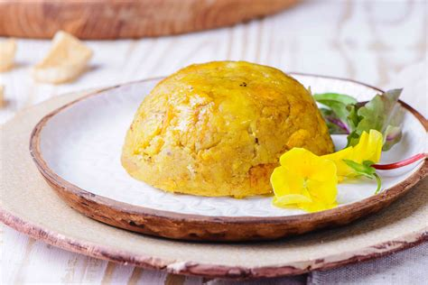

Mofongo

Description
Plantain mofongo is thought to originate in Puerto Rico, and is a dish
made from fried green (unripe) plantains mashed together with garlic and
crackling pork rinds, also known as chicharrón.
Ingredients
- 2 cups vegetable oil, for frying
- 3 medium green, unripe plantains
- 1 tablespoon garlic paste
- 6 ounces pork rinds or cracklings, crushed
Steps
- Gather the ingredients.
-
Heat about 2 inches of oil in a frying pan or deep fryer to 350 F.
-
While the oil is heating up, peel the plantains and cut into 1-inch
rounds.
-
Fry the plantains until golden and tender. This will take approximately
4 to 6 minutes.
-
Remove cooked plantains from the pan or fryer and allow to drain on
paper towels
-
Put the garlic paste in a mixing bowl or mortar and add the fried
plantains. Mash until thoroughly blended.
-
Add the pork rinds. Continue to mash and mix until all of the
ingredients are well incorporated.
- Shape the mofongo into 4 balls.
-
Alternatively, you can make the mofongo into a half-dome shape using a
small condiment bowl as a mold; push a portion of mofongo down to the
bottom of the bowl.
- With the back of a spoon, smooth over and level off the mix.
-
Then use the spoon to scrape around the bowl and remove the mash in a
half-dome shape.
- Serve the mofongo hot and enjoy.
Back to Top